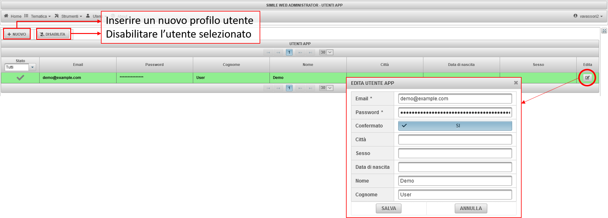

4. UTENTI¶
La funzione Utenti App permette la gestione dei profili degli utenti che utilizzano l’App (Fig. 4.1:). Tramite l’App è infatti prevista l’autenticazione degli utenti. Per ogni utente sono indicati lo stato (attivo o disattivato), le credenziali (e-mail e password), nome e cognome, città, data di nascita e sesso. Selezionando una riga è possibile disabilitare l’utente (funzione DISABILITA in alto), oppure editare il profilo (funzione Edita, ultima colonna). Con la funzione Edita è possibile in particolare modificare tutti i parametri del profilo o aggiungere nuove informazioni.

Fig. 4.1: Utenti App: gestione degli utenti.¶